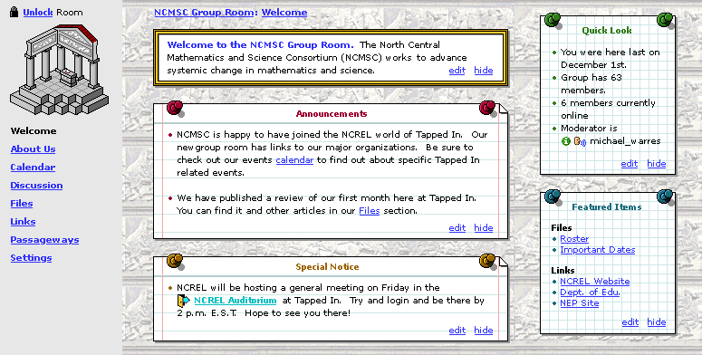

Every member of TAPPED IN can apply for their own personal office in TAPPED IN. There are many things that a member can do in their office. For example, they can hold private meetings, remodel it by selecting a new look from the themes provided in their room settings, and store resources like files and web links.
Getting a room
Every member of TAPPED IN can have their own private office [1]. Members must apply for offices; they are not created by default when a member joins TAPPED IN. Documentation on how to create or apply for a new office will be available in the TAPPED IN reception and help pages. [1]
A member can have only one TAPPED IN office. A member can own multiple rooms, though, if they apply for and create a group (groups are rooms) or course (courses are rooms too).
Room navigation options
Each room type has a specific set of side navigation options. For individual rooms, these options are:
| Welcome | Contains sticky notes of noteworthy items such as annoucements, noteworthy files/links/passageways, etc.[1] |
| Discussion | The member's personal discussion board to use with room visitors; not enabled until requested [2] |
| Files | Files that the member uploads to make available from their room [1] |
| Links | URL's that the member wants to make available from their room [1] |
| Passageways | Links to other rooms that the member wants to get to or highlight as linked to from their room [1] |
| Settings | A variety of controls the user can use to customize the content and look of their room [1] |
More detail about these navigation options is given elsewhere; follow the links above to learn about each.
Group rooms have two additional links: About Us (just under Welcome) and Calendar just under About Us[1]
Courses have several different and additional links; see the Course specs for more information.
When a visitor or owner of a room enters any room (individual, group, or course room) through a passageway or by any other means, they will land in the Welcome page of the room.
Editing options
Only the owner of a room can edit the room name (in Settings) and contents (via edit links and and in Settings) and look and feel (in Settings). [1]
The owner can also lock the room to hold a private meeting, or keep others out.[2]
To lock a room, the owner clicks th open padlock link above the room drawing in the upper right. To unlock the room, the owner clicks the lock padlock link.
If an individual room is not locked, then it is assessible to others. That is, individual rooms are always public except if/when they are locked by their owner.
The image below shows how a room looks to an owner when he/she enters it. Note that if this is an image of a group room. If it were individual room, the About Us and Calendar links would not be present, and the Quick Look note would not appear (Quick Look is for courses and groups only). Notice that the edit, hide, and unlock options are available; these are only available to the owner of a room, not visitors.
See the Welcome page (or pages for other subnav items) for more information on the content of these items or how to edit them.
